Hi, My name is Devanshi
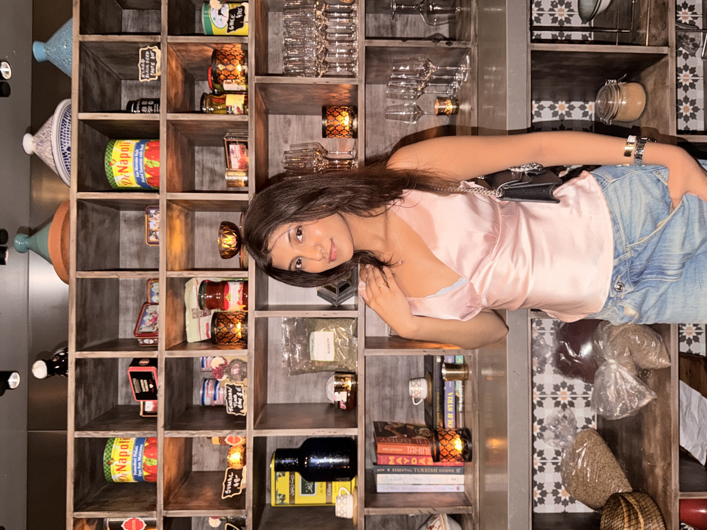
I am a junior at the University of San Francisco majoring in Data Science and minoring UX/UI, with a focus on design that is expressive, culturally grounded, and technically considered. An international student whose background shapes every project.
on repeat
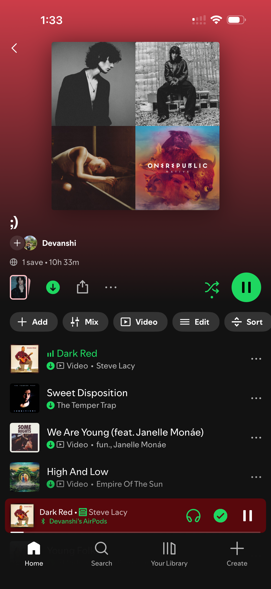
This playlist ran quietly in the background through literally everything in the middle column, the cafe, the park, the walk. The actual soundtrack of the day, if I'm being honest about it.
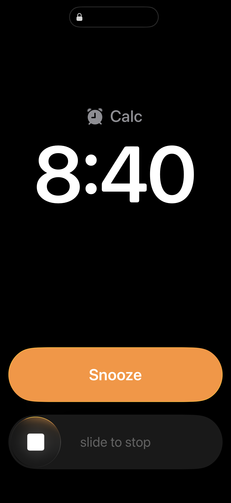
Time to wake up, 8:40am. Snooze button looking real tempting right now.
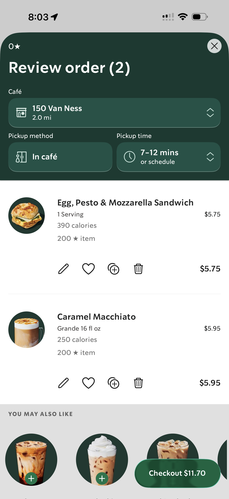
Mobile order placed for my breakfast and a caramel macchiato, gonna be ready in 7-12 mins.
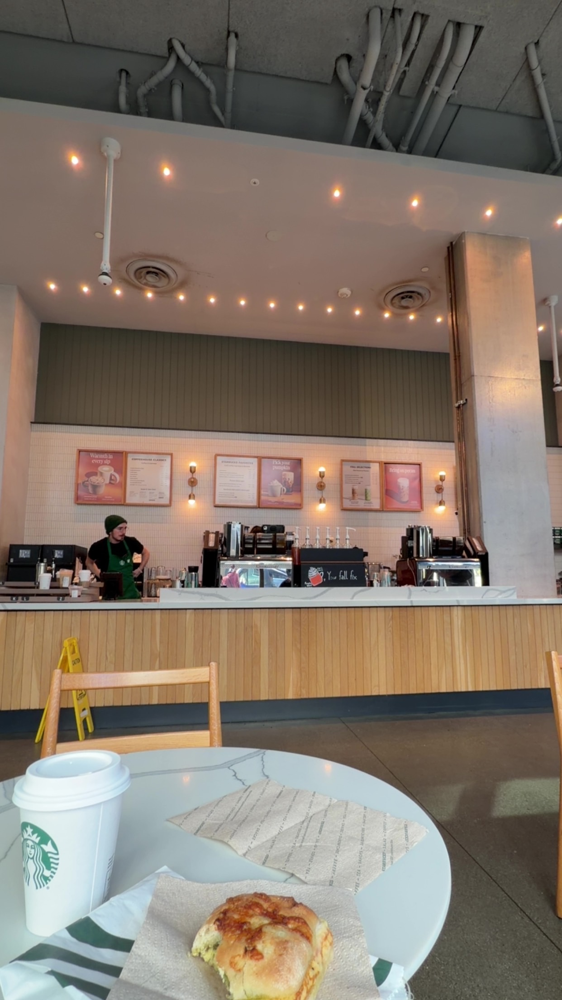
Coffee run before the day starts is a non-negotiable.
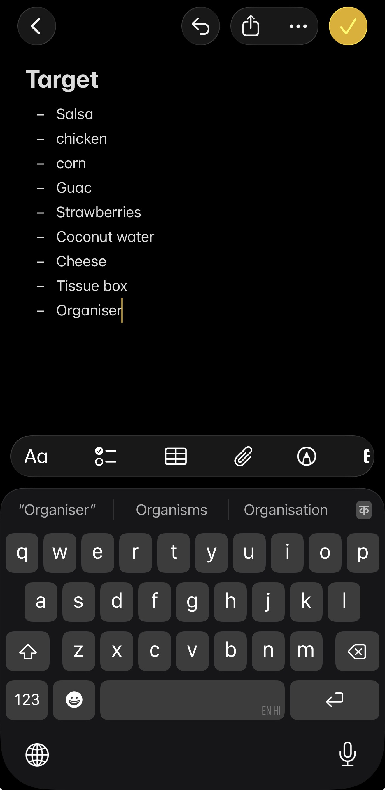
Made a list before I could talk myself out of going. Taco night ingredients up top, "Organiser" tacked on at the very end because apparently my brain multitasks even in the Notes app.
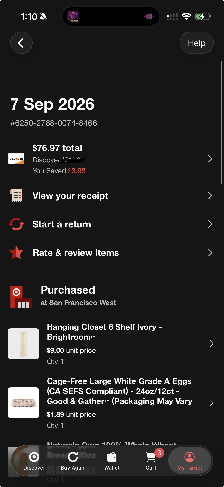
The total that always manages to surprise me even though I watched every item go into the cart myself.
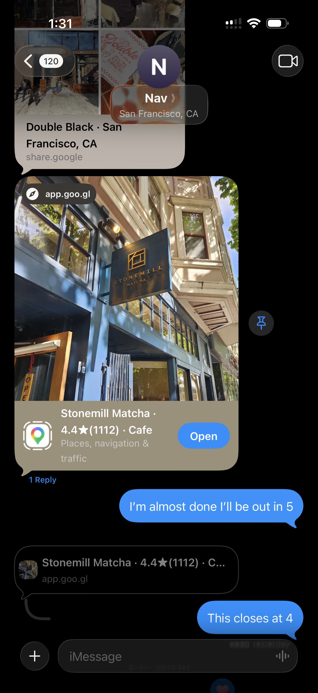
Barely home before my friend's already texting cafe options for the day. Double Black won out over the matcha place down the street, mostly because it doesn't close at 4.
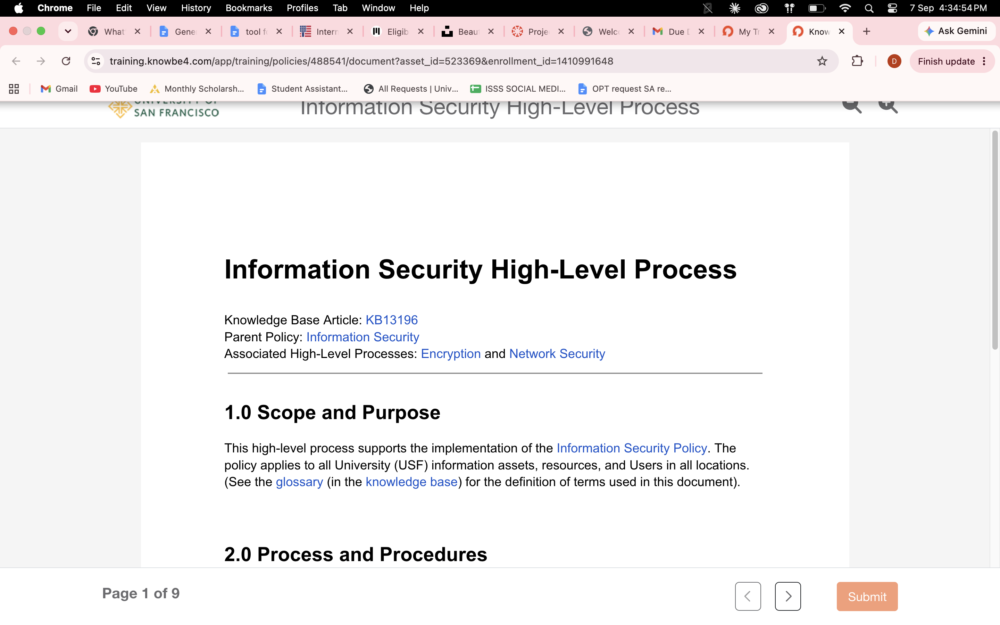
My on-campus job needed some website editing training done, so I brought my laptop to a cafe and tried to make compliance reading feel less like a chore. It mostly worked.
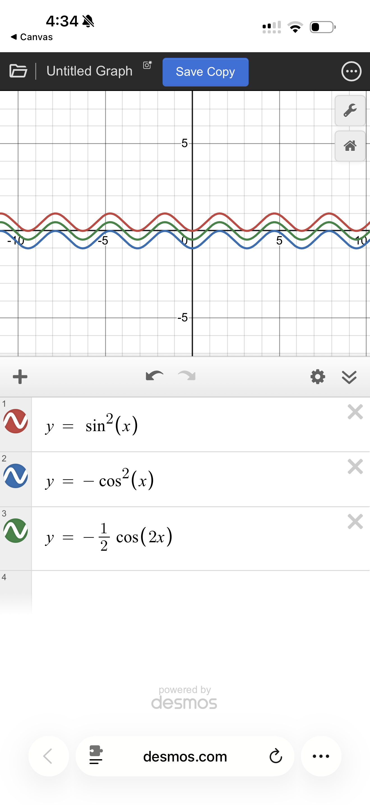
Calc 2 homework, same table, laptop open in a different tab. Graphed sin²(x), -cos²(x), and -½cos(2x) together just to watch them line up — small joys.
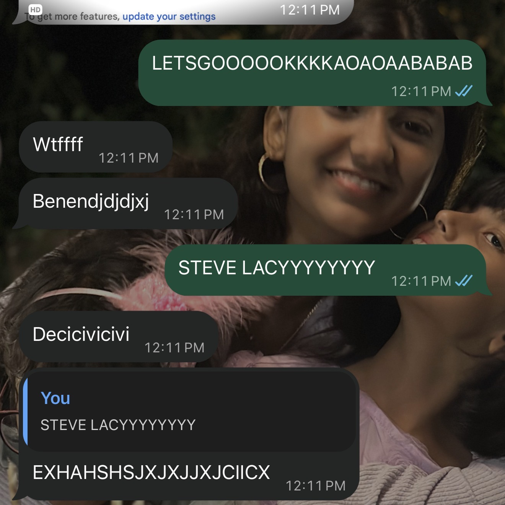
Mid-homework, my other friend drops the words "Steve Lacy" into the chat and it derails into full caps-lock chaos within about four messages. Zero regrets, zero coherent sentences.
Didn't even finish the sentence before I had ticket sites pulled up. Turns out he's playing San Francisco's Bill Graham Civic Auditorium on November 24 — so now there's a plan forming.
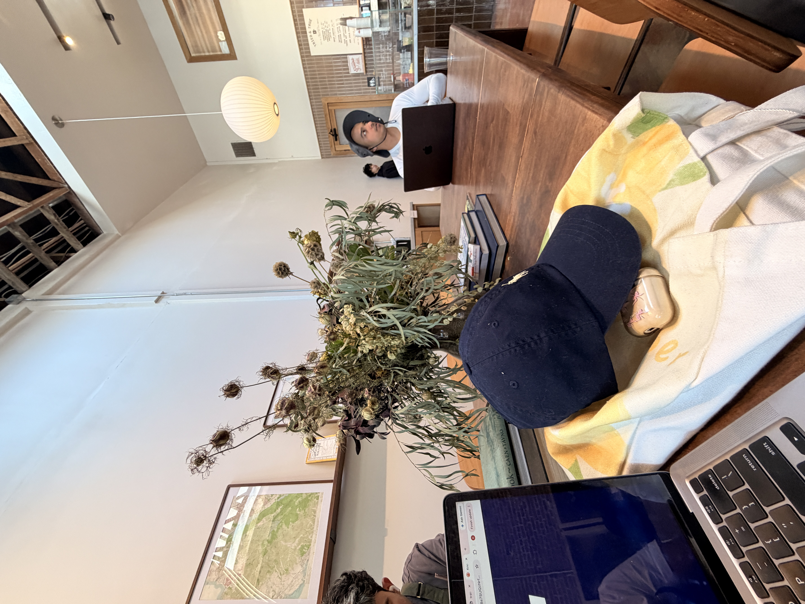
A few hours in, Double Black had basically become our office :/ laptops out, hats on tables, everyone quietly getting through their own to-do list in the same room.
After getting done with work, headed to Golden Gate Park, Labor Day weekend, and somehow a band had just set up and was playing. Everyone around us in white like there was a dress code nobody told us about. Never did find out who they were.
At some point we broke out the digital camera and these are the pictures, which is either very meta or just proof of how much I like documenting things.

Golden hour hit right as we were leaving, so obviously that meant a selfie was mandatory. This is maybe the fifth one of the day, if I'm being honest.
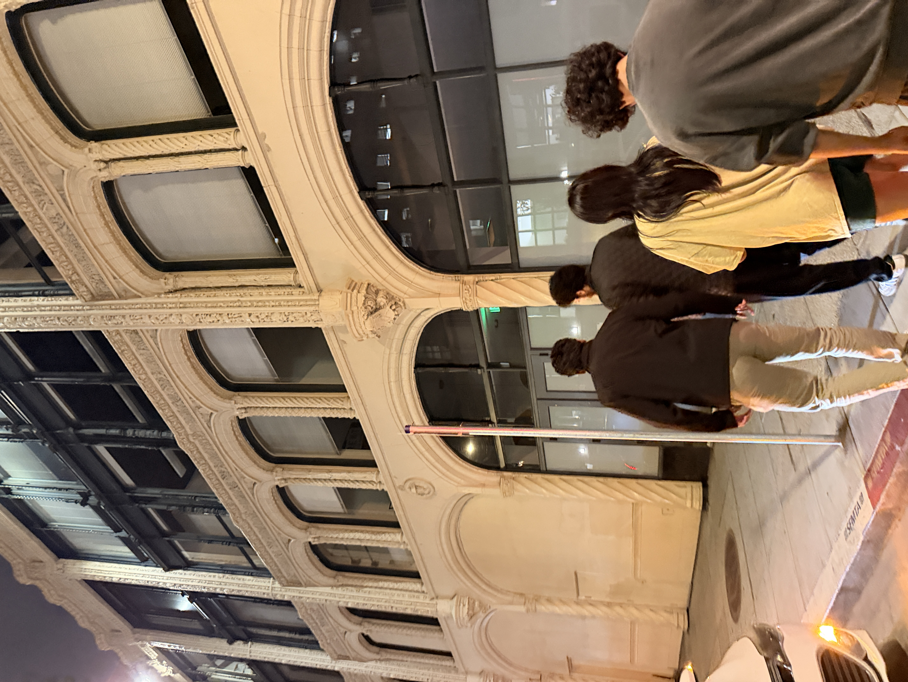
Ended up at an Indian restaurant with everyone to close out the day, the kind of dinner where nobody's really planned it, it just happens.
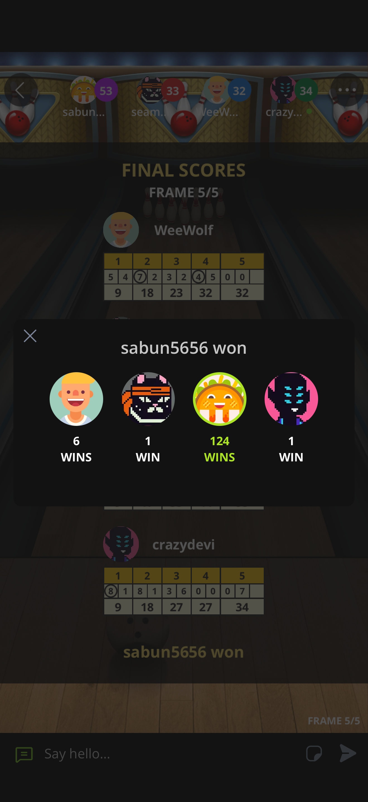
Walking back after dinner, someone opened Plato and started a bowling match. I lost, decisively, which felt fitting for how the rest of the night had gone.
Last thing before bed, every single night, no matter how the day went: texting my mom goodnight.